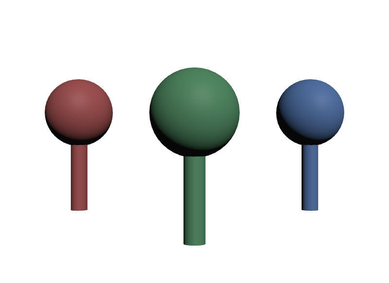

1体ずつ違うArcを足す
Instanceごとに違うReferenceを足すと、Prototypeの数がInstanceの数と同じになります。Instancingにした意味が無くなり、かえって重くなります。差を付けたいなら、まずHierarchical Refinementで足りないかを確かめます。
STEP 89 · HIERARCHICAL REFINEMENT
Prototypeを増やす書き方と、増やさない書き方があります
今日これだけ
公式情報に基づく説明
前のSTEPで、Instanceの内側（Instance Proxy）は読めても書けないと確かめました。ではどこになら書けるのかというと、Instance Primそのものです。instanceable = trueが付いているPrim自体は、Prototypeの中ではなく外にあります。ここへ書いた内容は、共有の対象になりません。
この「外側へ書く」やり方をHierarchical Refinementと呼びます。名前のとおり、階層の上の方から差を付けるという意味です。書ける代表は3つあります。
xformOp:*は位置・回転・大きさです。Instance PrimはXformableなので、そのまま変換を持てます。visibilityは表示・非表示で、invisibleにすればそのInstanceだけ消えます。そしてprimvars:*です。STEP 31で見たとおり、constantのPrimvarは子孫へ受け継がれます。この継承はInstanceの境界を越えて内側まで届きます。
いずれも書き込む先はInstance Primの外側なので、Prototypeの中身は1文字も変わりません。だからPrototypeは増えません。
USDA
# displayColor はあえて書かない。外側から配れるようにするため
def Xform "Chair"
{
def Sphere "Seat"
{
double radius = 0.5
}
def Cylinder "Leg"
{
double radius = 0.12
double height = 1
uniform token axis = "Y"
double3 xformOp:translate = (0, -0.85, 0)
uniform token[] xformOpOrder = ["xformOp:translate"]
}
}def Xform "A" (
instanceable = true
prepend references = @./chair.usda@
)
{
color3f[] primvars:displayColor = [(0.85, 0.2, 0.2)] (
interpolation = "constant"
)
double3 xformOp:translate = (-1.6, 0, 0)
uniform token[] xformOpOrder = ["xformOp:translate"]
}
def Xform "B" (
instanceable = true
prepend references = @./chair.usda@
)
{
color3f[] primvars:displayColor = [(0.2, 0.6, 0.3)] (
interpolation = "constant"
)
double3 xformOp:translate = (0, 0, 0)
double3 xformOp:scale = (1.35, 1.35, 1.35)
uniform token[] xformOpOrder = ["xformOp:translate", "xformOp:scale"]
}波括弧の中に書いた内容が、すべてInstance Primの上の記述です。参照しているchair.usdaには手を付けていません。
結果

chair.usdaで、Prototypeは1つしか作られていません。examples/lesson-38/hierarchical.usda / ソースからビルドしたOpenUSD v26.08のusdrecord --disableCameraLight（Hydra Storm・Metal）/ macOS 26.5.2・Apple M4from pxr import Usd, UsdGeom
stage = Usd.Stage.Open("hierarchical.usda")
print("Prototype:", [str(p.GetPath()) for p in stage.GetPrototypes()])
for name in "ABC":
seat = stage.GetPrimAtPath("/World/%s/Seat" % name)
found = UsdGeom.PrimvarsAPI(seat).FindPrimvarWithInheritance("displayColor")
print("/World/%s/Seat -> %s （出どころ %s）"
% (name, found.Get(), found.GetAttr().GetPrim().GetPath()))Prototype: ['/__Prototype_1']
/World/A/Seat -> [(0.85, 0.2, 0.2)] （出どころ /World/A）
/World/B/Seat -> [(0.2, 0.6, 0.3)] （出どころ /World/B）
/World/C/Seat -> [(0.2, 0.4, 0.9)] （出どころ /World/C）Prototypeは/__Prototype_1の1つだけです。それでいて、内側のSeatから見た色は3体で違います。値の出どころが/World/AのようにInstance Prim側になっている点が、Primvar Inheritanceが境界を越えて働いた証拠です。
重要な条件
この方法には条件があります。Prototypeの中のGprimが、その名前のPrimvarを自分で書いていないことです。書かれていれば、そちらが優先されます。継承は「自分に無ければ親をさかのぼる」仕組みだからです。
Seat自身のdisplayColor : [(0.15, 0.35, 0.85)]
継承をたどった結果 : [(0.15, 0.35, 0.85)] （書かれたPrim: /World/B/Seat）外側に(0.95, 0.55, 0.1)と書いても、返ってくるのはPrototype側の値です。「外から色を変えられるAssetにしたい」なら、Asset側であえてdisplayColorを書かないという設計判断が必要になります。STEP 76のAsset Parameterizationと同じ考え方です。
Ad Hoc Composition Arc Refinement
もうひとつのやり方がAd Hoc Composition Arc Refinementです。Instance Primに対して、その場で（ad hoc に）Composition Arcを追加します。ReferenceでもSTEP 42のInheritsでも構いません。
こちらはInstance Primを合成した結果の中身が変わるため、他のInstanceと共有できなくなります。つまりPrototypeが増えます。Hierarchical Refinementとの決定的な違いがここです。
from pxr import Usd
stage = Usd.Stage.Open("scene.usda")
print("初期 :", [str(p.GetPath()) for p in stage.GetPrototypes()])
# B にだけ、追加のLayerを参照させる
stage.GetPrimAtPath("/World/B").GetReferences().AddReference("./worn.usda")
print("Bへ参照を1本 :", [str(p.GetPath()) for p in stage.GetPrototypes()])
for name in "ABC":
print(" /World/%s -> %s"
% (name, stage.GetPrimAtPath("/World/" + name).GetPrototype().GetPath()))
# C にも「同じ」Arcを足すと、B と C はひとつにまとまる
stage.GetPrimAtPath("/World/C").GetReferences().AddReference("./worn.usda")
print("Cにも同じArc :", [str(p.GetPath()) for p in stage.GetPrototypes()])
for name in "ABC":
print(" /World/%s -> %s"
% (name, stage.GetPrimAtPath("/World/" + name).GetPrototype().GetPath()))初期 : ['/__Prototype_1']
Bへ参照を1本 : ['/__Prototype_1', '/__Prototype_2']
/World/A -> /__Prototype_1
/World/B -> /__Prototype_2
/World/C -> /__Prototype_1
Cにも同じArc : ['/__Prototype_1', '/__Prototype_2']
/World/A -> /__Prototype_1
/World/B -> /__Prototype_2
/World/C -> /__Prototype_2読み方の要点は最後のブロックです。Cにも同じArcを足したとき、Prototypeは3つには増えず2つのままで、BとCが同じ/__Prototype_2を共有しました。Prototypeは「Instanceの数」ではなく「合成結果の種類の数」だけ作られます。
だからこの方法は、1体だけを特別扱いするためというより、同じ変更をかけたい一群に、その群専用のPrototypeを作るために使います。10体のうち3体を汚した見た目にしたいなら、その3体へ同じArcを足せば、Prototypeは2つで済みます。
USDA → Python mapping
USDA
instanceable = true↓Python
prim.SetInstanceable(True)USDA
prepend references = @./chair.usda@↓Python
prim.GetReferences().AddReference("./chair.usda")USDA
color3f[] primvars:displayColor = [(0.85, 0.2, 0.2)]↓Python
UsdGeom.PrimvarsAPI(prim).CreatePrimvar("displayColor", Sdf.ValueTypeNames.Color3fArray, UsdGeom.Tokens.constant)USDA
uniform token visibility = "invisible"↓Python
UsdGeom.Imageable(prim).CreateVisibilityAttr("invisible")USDA
double3 xformOp:scale = (1.35, 1.35, 1.35)↓Python
UsdGeom.Xformable(prim).AddScaleOp().Set(Gf.Vec3f(1.35, 1.35, 1.35))Diagram
xformOp・visibility・primvarsを書く。Prototypeは増えないinstanceable = falseにして共有をやめる。何でも書けるが、軽さを失うよくある間違い
Instanceごとに違うReferenceを足すと、Prototypeの数がInstanceの数と同じになります。Instancingにした意味が無くなり、かえって重くなります。差を付けたいなら、まずHierarchical Refinementで足りないかを確かめます。
共有が壊れても、見た目は正しいままです。数百体のシーンで気付いたときには原因が分からなくなります。stage.GetPrototypes()の長さを検査に入れておくと、早い段階で気付けます。
/__Prototype_1のような名前は毎回同じとは限りません。同じファイルを開き直しただけで番号が変わることがあります。比べるときは番号の文字列ではなく、GetPrototype()が返すオブジェクトそのものを比べます。
内側に書かれていれば、そちらが勝ちます。外から配れるようにしたいPrimvarは、Asset側では書かずに空けておきます。
Glossary
xformOp・visibility・primvarsなどを書いて個体差を付ける方法。Prototypeは増えない。instanceable = trueが付いているPrim自身。Prototypeの外側にあり、ここへは書き込める。instanceableをfalseに戻して共有をやめること。自由に編集できるが、共有による軽さを失う。Official references
確認日: